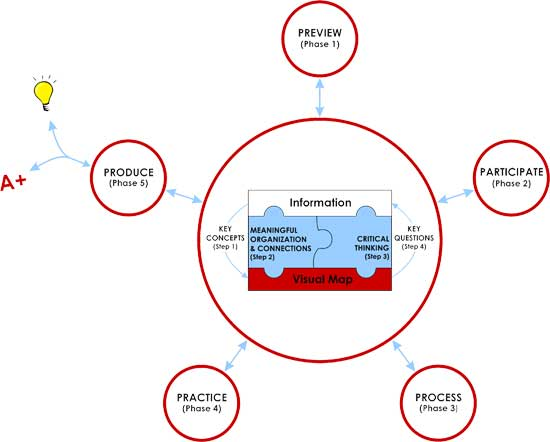

Before you go through the 5Ps of CLM, it’s important that you understand the 4 repeating steps within each phase of the 5Ps.
The 4 steps within each phase of the CLM form a continuous cycle during which you identify key concepts in the raw and unstructured information presented to you. You then organize the information, which in turn improves your understanding and gives you the ability to think critically about the information you have and the information that you need (key questions) to complete your understanding of the material.
Using the 4 steps provides the following benefits:
Here’s a more detailed look at the 4 steps:
1. Identify key concepts: Capture new, important concepts from information resources (textbook, class lecture, etc.) into one integrated visual map (see Chapter 2 to review how to make a visual map). Identifying, writing down, organizing, and connecting key concepts is a great exercise in learning. By writing down your thoughts, you’re making the concepts tangible and memorable. By recording them in both words and spatially-related representations, you’re engaging both the logical and creative sides of your brain, maximizing information retention and personal relevance.
Here are some questions that you should be asking in this step:
2. Meaningfully organize and connect key concepts using a visual map: Organize and integrate concepts in a meaningful way by making connections between the concepts in the visual map. In essence, you’re constantly adding, relating, and building upon what you already know. This often requires that you make sense of unorganized information and cope with ambiguity.
Here are some questions that you should be asking in this step:
3. Think critically: Having organized and connected key concepts, you can now think clearly and critically. Critical thinking is a continuous, purposeful, and reflective process about what to believe, do, think, or learn. It is fact-based, hypothesis-driven, and structured thinking. It uses systematic and objective methods to solve problems and liberates you from inaccuracies, biases, and misleading information. With critical thinking, you’ll very often discover new learning experiences, which will give you new frames of reference and will shake your entrenched way of doing things and your old assumptions. With critical thinking, you’ll have many “wow” moments.
Here are some important questions12 that you should be asking in this step:
Critical thinking is an integral part of CLM and deserves more attention than I was able to provide here. Two good resources for developing your critical thinking are my book recommendations on critical thinking available at http://conciselearning.com/studyskillsbooks.html and videos by critical thinking experts available at www.youtube.com/conciselearning.
4. Ask key questions: Identify remaining questions to drive your inquiry, keep you focused, identify the purpose behind what you do, and channel your learning. Don’t ask questions to which you already know the answers. Asking questions will enable you to discover missing concepts and connections, while keeping you interested and engaged in your learning process. If you maintain a curious mind, you won’t have any problems with this step.
Here are some questions that you should be asking in this step:
By asking key questions, you’re helping yourself find solutions and building confidence and skill in regards to the process of asking questions and developing answers. The more you learn, the more questions you’ll find, and the more comfortable you’ll become with the “question culture.” With these 4 steps, you put discovery back into your learning. You’ll be solving problems, answering questions, and working out solutions yourself, taking the knowledge presented to you by someone or something else and making it your knowledge. Engagement and learning go hand in hand.
When you complete the 4 steps in one phase, move to the next phase and repeat the 4 steps. Note that you’ll have to go through the 4 steps few times before you complete a phase. Add new key concepts and revise concepts and organization as content evolves to reflect your new understanding and give you a more comprehensive visual map.
At the end of every session and before the next P, you must quiz yourself to see if you could mentally recreate the visual map without mistakes — both the big picture and the details.

The 5Ps are part of a systematic and continuous process for managing your time and energy to generate outstanding learning and grades.
The 5Ps process benefits you in the following ways:
The 5Ps process is described here in detail so that you can better understand how it works. Here is the summary diagram of the 5Ps that you’ve already seen.